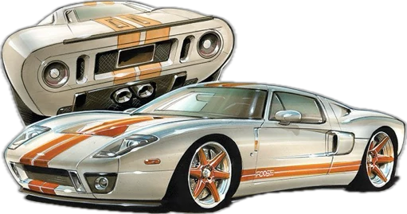

Технология, с помощью которой вмятины на кузове автомобиля
удаляются без рихтовки, шпатлевки и перекраски детали, называется
технологией PDR. Название PDR (Paintless dent repair / paintless
dent removal) — бескрасочное или безболезненное восстановление
вмятин — отражает суть самой технологии, которая заключается в
бережном устранении повреждений.
Преимущества беспокрасочного удаления вмятин:
- Скорость. Если повреждение несложное, мастер устранит его за час-два. И только особо сложные случаи могут занять около суток.
- Цена. Во многих случаях вытягивание вмятин без покраски стоит дешевле традиционного кузовного ремонта.
- Удобство для мастера.Специнструмент позволяет добраться до вмятины не снимая деталь. Разбирать кузов приходится только в случаях, когда до места деформации нельзя добраться с помощью силового инструмента.
- Удобство для клиента. Не нужно надолго оставлять машину на СТО. Сохраняется оригинальное лакокрасочное покрытие. Нет риска несовпадения цвета при перекраске. Автомобиль не выглядит битым. Принципы технологии PDR Повреждения удаляются с помощью специнструмента: силовых крюков, пробойников, клеевых систем. Чтобы мастеру хорошо был виден рельеф повреждения, используются многополосные лампы и отражающие панели.
Мои работы
Удаление вмятин без покраски в Ставрополе
Предоставляю услуги ремонта вмятин без покраски (PDR) устранения последствий града, ремонт вмятин на бамперах. Индивидуальный подход к каждому человеку) делаю скидки
Адрес: Ставрополь, Старомарьевское шоссе, 30Б
